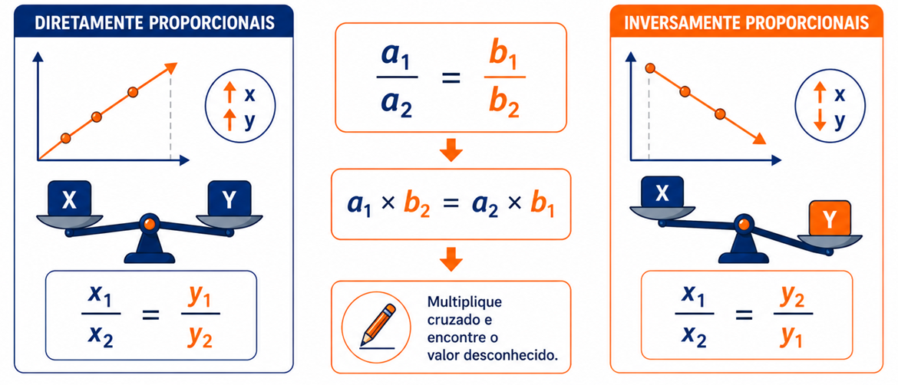

1º Ano | Aula 35: Regras de Três Simples e Composta
📚 Resumo
A Regra de Três Simples envolve apenas duas grandezas proporcionalmente relacionadas (diretas ou inversas). Quando há três ou mais grandezas, utiliza-se a Regra de Três Composta.
Grandezas diretamente proporcionais aumentam ou diminuem no mesmo sentido. Grandezas inversamente proporcionais variam em sentidos opostos (ao aumentar uma, a outra diminui na mesma proporção).
📖 Métodos de Resolução
1. Regra de Três Simples
Utilizada quando comparamos duas grandezas:
Diretamente Proporcionais (DP): Monta-se a proporção mantendo a ordem e multiplica-se cruzado ($\frac{a}{b} = \frac{c}{x}$).
Inversamente Proporcionais (IP): Inverte-se uma das razões antes de multiplicar cruzado ($\frac{a}{b} = \frac{x}{c}$) ou multiplica-se em linha ($a \cdot c = b \cdot x$).

Figura 1:Regra de três simples.
2. Regra de Três Composta
Envolve três ou mais grandezas. O passo a passo para resolução é:
Isolar a razão que contém a incógnita $x$.
Comparar individualmente cada uma das outras grandezas com a grandeza que contém o $x$ (avaliando se são DP ou IP em relação a ela).
Inverter as razões que forem inversamente proporcionais à grandeza do $x$.
Igualar a razão do $x$ ao produto de todas as outras razões ajustadas.
💡 Matemática em Ação
🏭 Produção Industrial e Logística
Empresas utilizam regras de três compostas para calcular prazos de entrega ajustando número de funcionários, horas diárias de trabalho e capacidade de máquinas.
🏗️ Construção Civil e Projetos
Engenheiros estimam o consumo de materiais, custos operacionais e tempo de conclusão de obras variando o número de operários envolvidos.
✅ 5 Questões Resolvidas (R 1 a 5)
R 1: Regra de Três Simples Direta
Enunciado: Um carro consome $12\text{ litros}$ de combustível para percorrer $150\text{ km}$. Quantos litros serão necessários para percorrer $250\text{ km}$ no mesmo ritmo?
Resolução:
1. As grandezas (distância e consumo) são diretamente proporcionais (mais distância exige mais combustível).
2. Montando a proporção:
$$\frac{150}{250} = \frac{12}{x}$$
3. Multiplicando em cruz:
$$150 \cdot x = 250 \cdot 12 \implies 150x = 3000 \implies x = \frac{3000}{150} = \mathbf{20\text{ litros}}$$
R 2: Regra de Três Simples Inversa
Enunciado: Uma reforma é concluída em $12\text{ dias}$ por $6\text{ operários}$. Quantos dias serão necessários para realizar a mesma reforma com $9\text{ operários}$, mantendo o mesmo ritmo de trabalho?
Resolução:
1. As grandezas (operários e dias) são inversamente proporcionais (mais operários realizam a obra em menos dias).
2. Multiplicando em linha ou invertendo uma das razões:
$$6 \cdot 12 = 9 \cdot x$$
$$72 = 9x \implies x = \frac{72}{9} = \mathbf{8\text{ dias}}$$
R 3: Regra de Três Composta - Todas DP
Enunciado: Em uma fábrica, $5\text{ máquinas}$ idênticas produzem $600\text{ peças}$ em $4\text{ dias}$. Quantas peças serão produzidas por $8\text{ máquinas}$ durante $6\text{ dias}$?
Resolução:
1. Grandeza do $x$: Peças ($600 \to x$).
2. Comparação com a grandeza Peças:
- Máquinas e Peças: DP (mais máquinas produzem mais peças).
- Dias e Peças: DP (mais dias geram mais peças).
3. Montando a equação:
$$\frac{600}{x} = \frac{5}{8} \cdot \frac{4}{6}$$
$$\frac{600}{x} = \frac{20}{48} \implies 20x = 600 \cdot 48 \implies 20x = 28800 \implies x = \mathbf{1440\text{ peças}}$$
R 4: Regra de Três Composta com Grandeza Inversa
Enunciado: Numa gráfica, $4\text{ impressoras}$ trabalhando $6\text{ horas por dia}$ imprimem um lote em $5\text{ dias}$. Em quantos dias $3\text{ impressoras}$ trabalhando $8\text{ horas por dia}$ imprimirão o mesmo lote?
Resolução:
1. Grandeza do $x$: Dias ($5 \to x$).
2. Comparação com a grandeza Dias:
- Impressoras e Dias: IP (menos impressoras exigem mais dias). Inverte-se para $\frac{3}{4}$.
- Horas/dia e Dias: IP (mais horas por dia reduzem os dias necessários). Inverte-se para $\frac{8}{6}$.
3. Montando a equação com as razões invertidas:
$$\frac{5}{x} = \frac{3}{4} \cdot \frac{8}{6}$$
$$\frac{5}{x} = \frac{24}{24} = 1 \implies x = \mathbf{5\text{ dias}}$$
R 5: Regra de Três Composta Mista
Enunciado: $8\text{ pedreiros}$ constroem um muro de $40\text{ metros}$ em $10\text{ dias}$. Quantos pedreiros serão necessários para construir um muro de $60\text{ metros}$ em $6\text{ dias}$?
Resolução:
1. Grandeza do $x$: Pedreiros ($8 \to x$).
2. Comparação com Pedreiros:
- Muros (metros): DP (muro maior exige mais pedreiros). Mantém $\frac{40}{60}$.
- Dias: IP (menos dias exigem mais pedreiros). Inverte para $\frac{6}{10}$.
3. Montando a equação:
$$\frac{8}{x} = \frac{40}{60} \cdot \frac{6}{10}$$
$$\frac{8}{x} = \frac{2}{3} \cdot \frac{3}{5} = \frac{6}{15} = \frac{2}{5}$$
$$2x = 8 \cdot 5 \implies 2x = 40 \implies x = \mathbf{20\text{ pedreiros}}$$
✍️ 5 Questões Propostas (P 6 a 10)
P 6: Consumo Proporcional
Enunciado: Se $3$ torneiras idênticas enchem um tanque em $8\text{ horas}$, em quanto tempo $4$ torneiras com a mesma vazão encheriam esse mesmo tanque?
Resolução: Torneiras e tempo são inversamente proporcionais. Multiplicando em linha: $3 \cdot 8 = 4 \cdot x \implies 24 = 4x \implies x = \mathbf{6\text{ horas}}$.
P 7: Velocidade e Tempo
Enunciado: Um ônibus faz um trajeto em $4\text{ horas}$ com velocidade média de $60\text{ km/h}$. Se a velocidade média aumentasse para $80\text{ km/h}$, qual seria o tempo do trajeto?
Resolução: Velocidade e tempo são inversamente proporcionais. $60 \cdot 4 = 80 \cdot x \implies 240 = 80x \implies x = \mathbf{3\text{ horas}}$.
P 8: Regra de Três Composta Simples
Enunciado: $6$ tecelãs produzem $120\text{ metros}$ de tecido em $8\text{ dias}$. Quantas tecelãs serão necessárias para produzir $300\text{ metros}$ em $10\text{ dias}$?
Resolução: Tecelãs ($6 \to x$). Tecidos e Tecelãs são DP ($\frac{120}{300}$). Dias e Tecelãs são IP ($\frac{10}{8}$).
$$\frac{6}{x} = \frac{120}{300} \cdot \frac{10}{8} \implies \frac{6}{x} = \frac{2}{5} \cdot \frac{5}{4} = \frac{10}{20} = \frac{1}{2}$$
$$x = 6 \cdot 2 \implies \mathbf{12\text{ tecelãs}}$$
P 9: Trabalho e Produtividade
Enunciado: $12$ operários, trabalhando $8\text{ horas por dia}$, realizam uma tarefa em $15\text{ dias}$. Em quantos dias $10$ operários, trabalhando $6\text{ horas por dia}$, realizarão a mesma tarefa?
Resolução: Dias ($15 \to x$). Operários e Dias são IP ($\frac{10}{12}$). Horas/dia e Dias são IP ($\frac{6}{8}$).
$$\frac{15}{x} = \frac{10}{12} \cdot \frac{6}{8} = \frac{60}{96} = \frac{5}{8}$$
$$5x = 15 \cdot 8 \implies 5x = 120 \implies x = \mathbf{24\text{ dias}}$$
P 10: Ração para Animais
Enunciado: Um estoque de ração alimenta $15\text{ cavalos}$ durante $30\text{ dias}$, fornecendo $2\text{ refeições}$ diárias. Para alimentar $20\text{ cavalos}$ fornecendo $3\text{ refeições}$ diárias, para quantos dias durará esse mesmo estoque?
Resolução: Dias ($30 \to x$). Cavalos e Dias são IP ($\frac{20}{15}$). Refeições e Dias são IP ($\frac{3}{2}$).
$$\frac{30}{x} = \frac{20}{15} \cdot \frac{3}{2} = \frac{4}{3} \cdot \frac{3}{2} = \frac{12}{6} = 2$$
$$2x = 30 \implies x = \mathbf{15\text{ dias}}$$
🎓 TESTES (T 11 a 15)
🚧 EM BREVE!
Questões de vestibulares serão disponibilizadas em breve.